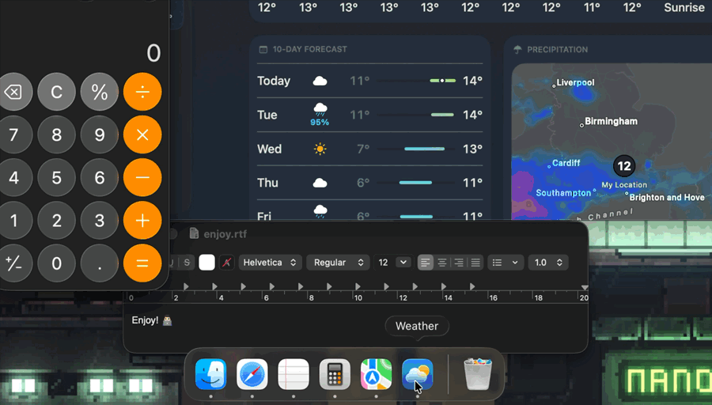

Cluttered dock fatigue?
On a Mac, closing a window doesn't quit the app, so they pile up in your Dock. MiddleQuit lets you quit any of them right there.
Works however you click
Mouse
Point at an app in the Dock and press the scroll wheel. Any mouse with a middle button works.
Trackpad
Point at an app and tap with three fingers. You don't need any other apps for this.
Everywhere
Turn on one setting and a three-finger tap becomes a middle click in every app, so links open in new tabs and tabs close.


Small, and open about it
- Force Quit when you need it
- Hold a modifier key of your choice to force quit an app that's stuck. You pick the key in Settings.
- Why it needs Accessibility
- MiddleQuit has to see clicks on the Dock and work out which app is under your cursor. macOS asks you to allow this the first time you open it.
- Nothing leaves your Mac
- The app has no network code at all. It doesn't have accounts or analytics.
- Open source
- The code is on GitHub under GPLv3, so you can read it or build it yourself. Buying gets you the ready-to-run app and supports the work.
Opening it the first time
MiddleQuit isn't notarized by Apple yet, so macOS warns you when you first open it. The code is public if you'd like to read it first. You can get past the warning in a few steps:
- Move MiddleQuit to Applications and open it. When macOS warns you, press Done.
- Open System Settings, then Privacy & Security.
- Scroll down to Security and press Open Anyway.
- Confirm with your password or Touch ID, then allow Accessibility when MiddleQuit asks.